These notes use content from OpenIntro Statistics Slides by
Mine Cetinkaya-Rundel.
These notes use content from OpenIntro Statistics Slides by
Mine Cetinkaya-Rundel.
In this section, we introduce basic concepts and rules of probability, which is the foundation of statistical inference.
List of terms
Probability is a way to quantify (measure) uncertainty.
Example. If we toss a coin, what is the probability of getting Head?
If the coin is fair, then the chance of getting head is the same as the chance of getting Tail. Since there are two possible outcomes, the chance is 1-in-2, that is, 1/2 (Equally likely outcomes, theoretic)
If the coin is unfair, then we need to do many observations of tosses to get the probability of getting head, that is, use the proportion of times the Head would occur if we observed the random process an infinite number of times (frequentist interpretation).
A random process is a situation in which we know what outcomes could happen, but we don’t know which particular outcome will happen.
A random process is the process of observing a random phenomena.
Examples:
coin tosses (possible outcomes are either “Head” or “Tail”, but we do not know which one occurs for sure)
die rolls (possible outcomes are “1”, “2”, “3”, “4”, “5”, “6”)
the stock market next year tomorrow (possible outcomes are goes “up”, “down”)
Law of large numbers states that as more observations are collected, the proportion of occurrences with a particular outcome, \(\hat{p}_n\), converges to the probability of that outcome, p.
Example. Roll a die. Let \(\hat{p}_n\) be the proportion of outcomes that are “1” after the first \(n\) rolls.
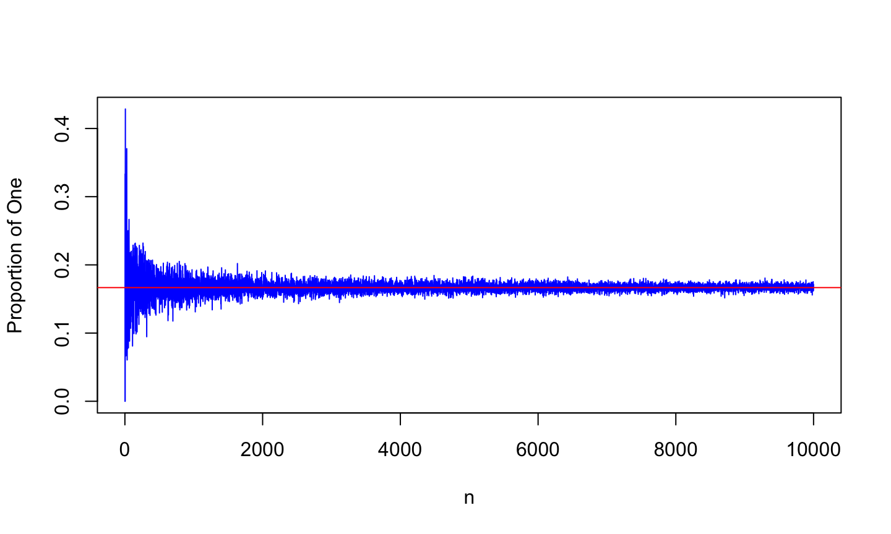
Example. Roll a die. Let \(\hat{p}_n\) be the proportion of outcomes that are “1” after the first \(n\) rolls.
n = 1:10
outcomes = c(1, 2, 3, 4, 5, 6)
p.1 = NULL
for(i in n){
p.1[i] = mean(sample(outcomes, i, replace = T) == 1)
}
plot(n, p.1, type = "l", col = "blue", ylab = "Proportion of One")
abline(h = 1/6, col = "red")
Example. Roll a die. Let \(\hat{p}_n\) be the proportion of outcomes that are “1” after the first \(n\) rolls.
n = 1:1000
outcomes = c(1, 2, 3, 4, 5, 6)
p.1 = NULL
for(i in n){
p.1[i] = mean(sample(outcomes, i, replace = T) == 1)
}
plot(n, p.1, type = "l", col = "blue", ylab = "Proportion of One")
abline(h = 1/6, col = "red")
With a small number of observations, outcomes of random phenomena may look quite different from what you expect.
Example. Toss a fair coin twice: You may see “HH”, or “TT”, may not be exactly as expected “HT” or “TH”
With a large number of observations, summary statistics settle down and get increasingly closer to particular numbers. As we make more observations, the proportion of times that a particular outcome occurs gets closer and closer to a certain number we would expect.
Example. Toss a fair coin 1 million times, you may see nearly half of the times showing head, nearly half of the times showing tail.
The long-run proportion provides the basis for the definition of probability.
For any random process, the probability of a particular outcome is the proportion of times that would occur in a long run of observations.
The sample space associated with an experiment (or a trial) is the set of \(\underline {\text{all possible outcomes}}.\)
Example.
Two basic probability rules:
When tossing a fair coin, it is expected that the H and T will be shown equally likely.
if heads comes up on each of the 10 tosses, what do you think the chance is that another head will come up on the next toss? 0.5, less than 0.5, or more than 0.5?
\[ {\underline{H} \underline{H} \underline{H} \underline{H} \underline{H} \underline{H} \underline{H} \underline{H} \underline{H} \underline{H} \underline{?}} \] - The probability is still 0.5, or there is still a 50% chance that another head will come up on the next toss.
\[ {P(H \text{ } on \text{ } 11^{th} \text{ } toss) = P(T \text{ } on \text{ } 11^{th} \text{ } toss) = 0.5}\] - The coin is not “due” for a tail.
For a random phenomena, the probability of a particular outcome is the proportion of times that would occur in a long run of observations.
An event is a subset of the sample space. An event consists of a particular outcome (simple event) or a group of possible outcomes possessing designated feature.
We use capital letters for events.
Example. If a test consists of 3 questions of multiple choices. Students’ answer is either correct (C) or incorrect (I).
What is the sample space?
What is the event of getting all three questions correct?
What is the event of getting at least two questions correct?
Sample space: {CCC, CCI, CIC, CII, ICC, ICI, IIC, III}.
Event A = student answers all 3 questions correctly = {CCC}
Event B = student passes (at least 2 correct) = {CCI, CIC, ICC, CCC}.
For a sample space with equally likely outcomes, the probability of an outcome is the relative ratio.
Examples
Flip a fair coin, the probability of getting a head or a tail is 1/2, or 0.5. \[𝑃(𝐻)=\frac{1}{2} \ \ \ \text{and} \ \ \ P(T)=\frac{1}{2}\]
Roll a fair die, the probability of getting numbers 1, 2, 3, 4, 5, 6 are all \(\frac{1}6.\)
If a teacher gives 1 quiz question of 4 multiple choices, only one is correct. Assume the student is not prepared, s/he selects the choice by guessing. What is the probability that student guessed correctly?
\[P(\text{student guessed correctly})=\frac{1}{4}\]
The probability of an event is the sum of probabilities of outcomes in the event.
Examples
Solution. A = { 2, 4, 6}, then 𝑃(𝐴)=𝑃(2)+𝑃(4)+𝑃(6)=\(\frac{1}6 + \frac{1}6 + \frac{1}6 = \frac{3}6 =\frac{1}2\) Another way to think: the outcomes are equally likely, there are 3 outcomes in A, there are six outcomes in total, so \(𝑃(𝐴) =\frac{3}6 =\frac{1}2\) (relative ratio)
Flip a fair coin twice, what is the probability of getting exactly on head? Solution. As the sample space is {HH, HT, TH, TT}, Let B be event of getting exactly one head ={ HT, TH}, then \(P(B)= \frac{1}2\)
If a teacher gives 1 quiz question of 4 multiple choices, only one is correct. Assume the student is not prepared, s/he selects the choice by guessing.
What is the probability that student guessed wrong? Ans: \(\frac{3}4\)
The intersection of A and B consists of outcomes that are in both \(\color{blue}{\text{A and B}}\). (Use \(\color{blue}{\text{A and B}}\) for the intersection, or use \(\color{blue}{\text{𝐴∩𝐵}}\).
The union of A and B consists of outcomes that are in A or in B or both. (use \(\color{blue}{\text{A or B}}\) for the union, or use \(\color{blue}{\text{𝐴∪𝐵}}\).
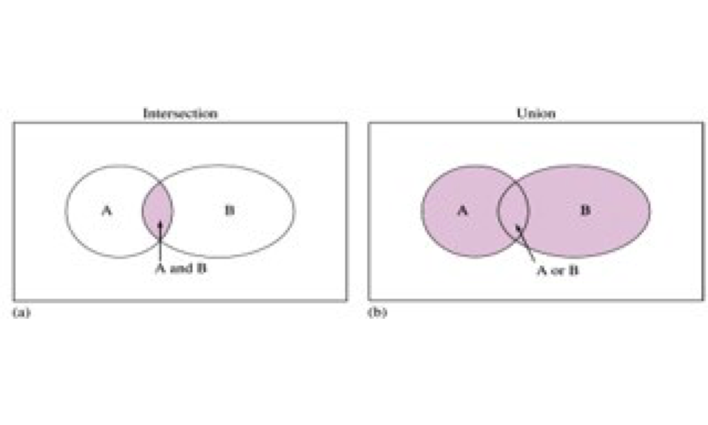

Two events A and B are non-disjoint if they have common outcome(s).
– general addition rule.
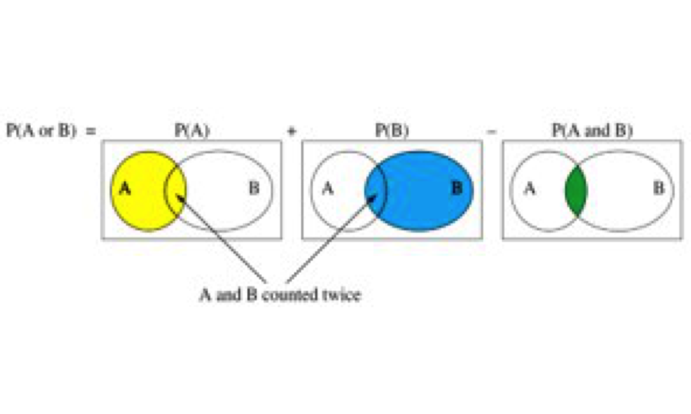
The probability of the Union, (with Outcomes in A or B or Both), add P(A) to P(B) and subtract P(A and B) to adjust for outcomes counted twice.
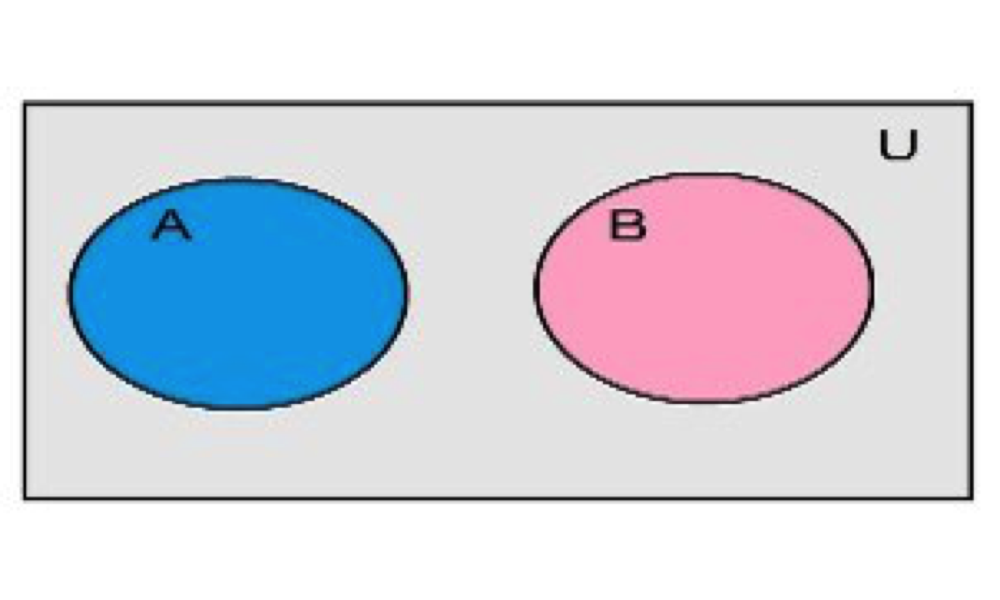
Question: When does P(A or B) = P(A) + P(B)?
Answer: if the events are disjoint, them P(A and B)= 0, P(A or B) = P(A) + P(B)– special addition rule.
Let A be the red cards, B be the Jacks, then A and B are non-disjoint events.

Example Find the P(red), P(Jack) and P(red and jack), P(red or jack)
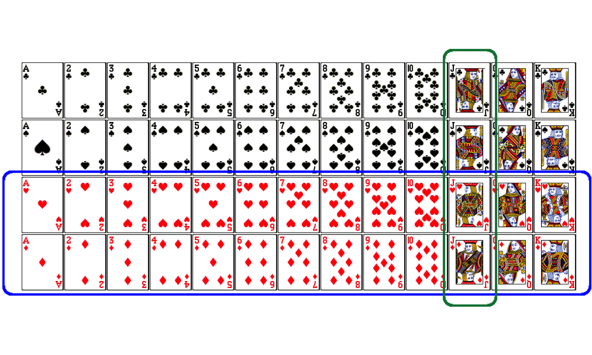
Solution : There are a total of 52 cards. \[{P(jack \text{ } or \text{ } red) = P(jack) + P(red) - \color{red}{P(jack \text{ } and \text{ } red)}}\]
\[{= \frac{4}{52} + \frac{26}{52} - \frac{2}{52} = \frac{28}{52}}= \frac{7}{13}\approx 0.538461538\] Round to three decimals: 0.538; round to four decimals: 0.5385.
Examples.
Solution.
\(\text{𝑃 (𝐵𝑖𝑜𝑙𝑜𝑔𝑦 𝑚𝑎𝑗𝑜𝑟𝑠)}=0.38 \hspace{0.4cm} \text{𝑃(𝑆𝑜𝑝ℎ𝑜𝑚𝑜𝑟𝑒𝑠)}=0.68,\hspace{0.4cm} \text{𝑃(𝐵 𝑎𝑛𝑑 𝑆)}=0.20\)
Use addition rule, \(𝑃(𝐵 𝑜𝑟 𝑆)=𝑃(𝐵) +𝑃(S) – 𝑃(𝐵 𝑎𝑛𝑑 𝑆)= 0.38+0.68−0.2=0.86\),
86% of meeting attendees who are either sophomores or Biology majors.
Solution.
From addition rule, \((𝐴 𝑜𝑟 𝐵) = 𝑃(𝐴) + 𝑃(𝐵) – \color{blue}{\text{𝑃(𝐴 𝑎𝑛𝑑 𝐵)}}\),
\(\color{blue}{\text{𝑃(𝐴 𝑎𝑛𝑑 𝐵)}} = 𝑃(𝐴) + 𝑃(𝐵) – 𝑃(𝐴 𝑜𝑟 𝐵)\),
= 0.25+0.64 –0.72=0.17
Note: Students can make other similar questions, using addition rule.
The complement of event A, denoted as \(A^c\), (or \(\bar{A}\)) is the event of all outcomes that are not in A.
A and \(A^c\) are mutually exclusive (disjoint): 𝑃(𝐴)+𝑃(\(A^c\))=1
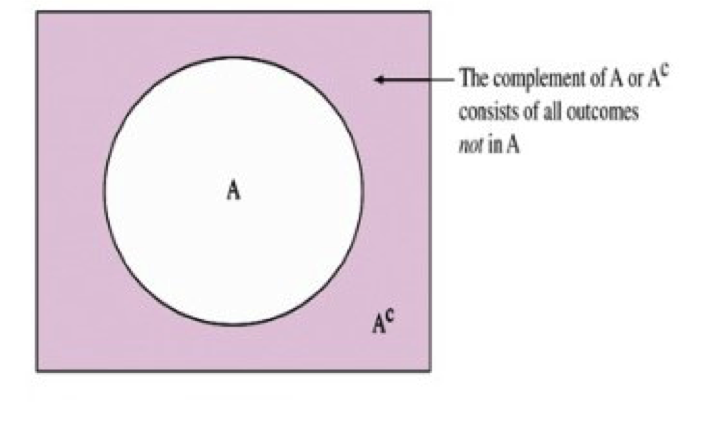
This implies
\[𝑃(A^c)=1−𝑃(𝐴) \ \text{and} \ 𝑃(𝐴)=1−𝑃(A^c)\]
Examples
If the sample space is 𝑆 = {HH, HT, TH, TT}, event 𝐴={HH}, then \(A^c\)={HT, TH, TT}.
If 𝑃(𝐴)=0.81, then 𝑃(\(A^c\))=0.19
Example. Below is a frequency table of class rank from a survey of 406 students. If one student is randomly selected, what is the probability that the student is:
Freshman
not a Freshman
a Freshman or a senior.
Answers (round to 3 decimals)
0.362
0.638
0.522
\[ \begin{align*} &\color{blue}{\text{class rank}} \\ \hline \color{green}{\text{class}} && \color{red}{\text{Frequency}} \\ \hline \text{Freshman}&& 147 \\ \text{Sophomore} && 96 \\ \text{Junior} && 98 \\ \text{Senior} && 65 \\ \hline \text{Total} && 406 \end{align*} \]
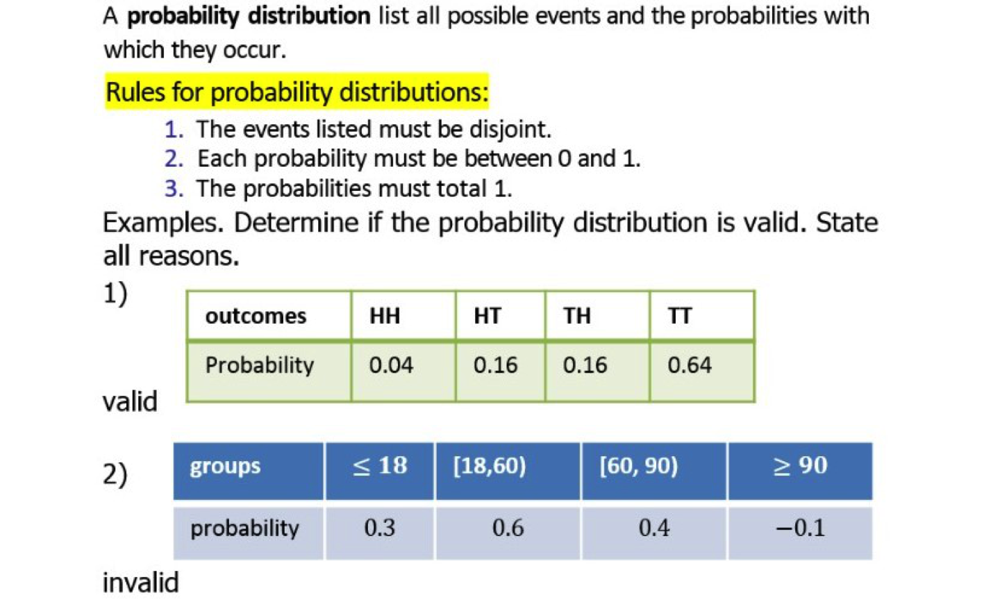
Two processes are independent if knowing the outcome of one provides no useful information about the outcome of the other.
Examples
For independent events A, B, the product rule holds: P(A and B) = P(A) × P(B) Or more generally,\({𝑃(A_1 \hspace{0.2cm}𝑎𝑛𝑑 \hspace{0.2cm} … \hspace{0.2cm}𝑎𝑛𝑑 \hspace{0.2cm} A_k) = \hspace{0.2cm}𝑃 (𝐴_1)\hspace{0.2cm} ×…× \hspace{0.2cm}𝑃 (A_k)}\)
Examples
If you toss an unfair coin twice, what is the probability of getting 2 heads? Assume the coin has 60% of chance showing head.
If a quiz contains 3 questions, each has a multiple choice of 4, only one is correct, what is the probability that a student gets all questions correctly by guessing?
If a quiz contains 3 questions, #1 has a multiple choice of 4, #2 is a T/F, #3 has a multiple choice of 6, what is the probability that a student gets all questions correctly by guessing?
Answer
\(0.6^2\)=0.36
\((\frac{1}{4})^3= \frac{1}{64}\)=0.015625
\((\frac{1}{4})(\frac{1}{2})(\frac{1}{6})\)=0.02083


Roughly 20% of undergraduates at a university are vegetarian or vegan. What is the probability that, among a random sample of 3 undergraduates, at least one is vegetarian or vegan?
Solution We break down to the following parts to consider:
\[\text{P(at least 1 from veg)} \\= 1 - \text{P(none veg)} \\= 1 - (1 - 0.2)^3 \\= 1 - 0.8^3 \\= 1 - 0.512 \\= 0.488\]
Example: The following contingency table is a sample of 100 people (gender and dominant hand use). If randomly select a person from the surveyed group, use the table to find the probability that
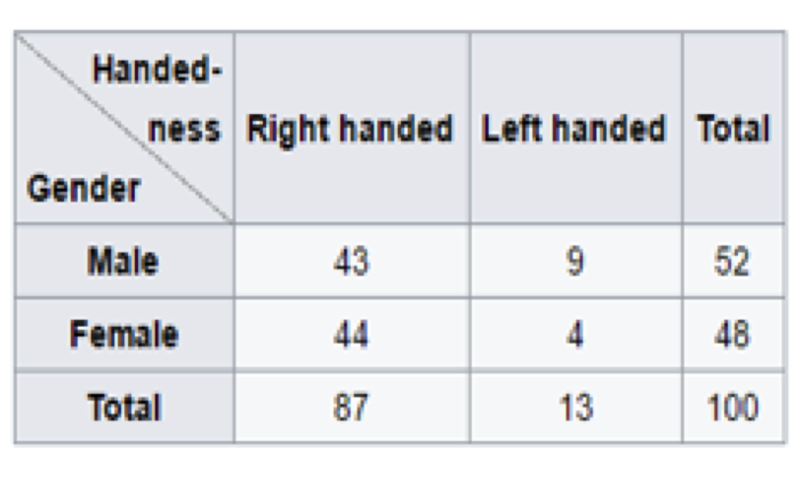
Ans:
0.87 (marginal probability)
0.52 (marginal probability)
0.43 (joint probability)
0.49 (conditional probability)
0.83 (conditional probability)
Disjoint vs. Complementary; Disjoint vs. Independent
Do the sum of probabilities of two disjoint events always add up to 1?
Not necessarily, there may be more than 2 events in the sample space, e.g. Party affiliation.
Do the sum of probabilities of two complementary events always add up to 1?
Yes, that’s the definition of complementary, e.g. Heads and Tails. Complements form special disjoint events.
Examples.
1) If 𝑃(𝐴)=0.3, 𝑃(𝐵)=0.6, events 𝐴 and 𝐵 are independent, find 𝑃(𝐴 𝑜𝑟 𝐵)
2) If 𝑃(𝐴)=0.3, 𝑃(𝐵)=0.6, events 𝐴 and 𝐵 are disjoint, find 𝑃(𝐴 𝑜𝑟 𝐵)
Solution.
1) By product rule, \(𝑃(𝐴 𝑎𝑛𝑑 𝐵)=P(A)P(B)=0.18\)
then by addition rule, \(𝑃(𝐴 𝑜𝑟 𝐵)= P(A)+P(B)−P(A and B)\)
=0.3+0.6−0.18=0.72
2) 𝑃(𝐴 𝑎𝑛𝑑 𝐵)=0, 𝑃(𝐴 𝑜𝑟 𝐵)=P(A)+P(B)=0.9
In this section, we discuss whether the probability of an event is related to (affected by) another event that has taken place.
The probability of A given that B has occurred is called the conditional probability of A given B is denoted by 𝑃(𝐴|𝐵)
Researchers randomly assigned 72 chronic users of cocaine into three groups: desipramine (antidepressant), lithium (standard treatment for cocaine) and placebo. Results of the study are summarized below.
\[ \begin{align} && \text{relapse} && \text{no relapse} &&\text{total} \\ \hline \text{desipramine} && 10 && 14 && 24 \\ \text{lithium} && 18 && 6 && 24 \\ \text{placebo} && 20 && 4 && 24 \\ \hline \text{total} && 48 && 24 && 72 \end{align} \]
What is the probability that a patient relapsed?
\[ \begin{align} && \text{relapse} && \text{no relapse} && \text{total} \\ \hline \text{desipramine} && 10 && 14 && \color{green}{24} \\ \text{lithium} && 18 && 6 && 24 \\ \text{placebo} && 20 && 4 && 24 \\ \hline \text{total} && \color{red}{48} && 24 && \color{purple}{72} \end{align} \]
\(P(relapsed) = \frac{\color{red}{48}}{\color{purple}{72}} = \frac{2}{3} \approx 0.67\)What is the probability that a patient received the desipramine)?
\(\text{P(desipramine)} = \frac{\color{green}{24}}{\color{purple}{72}}= \frac{1}{3} \approx 0.33\)
These are called Marginal Probability.
What is the probability that a patient received the antidepressant(desipramine) \(\underline{\color{red}{and}}\) relapsed?
\[ \begin{align} && \text{relapse} && \text{no relapse} && \text{total} \\ \hline \text{desipramine} && \color{red}{10} && 14 && 24 \\ \text{lithium} && 18 && 6 && 24 \\ \text{placebo} && 20 && 4 && 24 \\ \hline \text{total} && 48 && 24 && \color{red}{72} \end{align} \] P(relapsed and desipramine) = \(\frac{10}{72}=\frac{5}{36}\approx 0.14\) (joint probability)
Review on Addition Rule: find P (relapsed or desipramine) P (relapsed or desipramine)
= P (relapsed) + P (desipramine) - P(relapsed and desipramine)
\(\approx 0.67+0.33 −0.14=0.86 (or \frac{(48+24−10)}{72}=\frac{62}{72}\approx 0.86 )\)
Divide each entry by the grand total, we have a table showing joint probability and marginal probability.
\[ \begin{align} && \text{relapse} && \text{no relapse} && \text{total} \\ \hline \text{desipramine} && 10 && 14 && 24 \\ \text{lithium} && 18 && 6 && 24 \\ \text{placebo} && 20 && 4 && 24 \\ \hline \text{total} && 48 && 24 && 72 \end{align} \]
\[ \begin{align} && \text{relapse} && \text{no relapse} && \text{total} \\ \hline \text{desipramine} && \frac{10}{72} \approx 0.14 && \frac{14}{72}\approx 0.19 && \frac{24}{72}\approx0.33 \\ \text{lithium} && \frac{18}{72} \approx0.25 && \frac{6}{72}\approx 0.33 && \frac{24}{72}\approx0.33 \\ \text{placebo} && \frac{20}{72}\approx 0.28 && \frac{4}{72}\approx 0.06 && \frac{24}{72}\approx0.33 \\ \hline \text{total} && \frac{48}{72}\approx 0.67 && \frac{24}{72} \approx 0.33 && \frac{72}{72} \approx 1 \end{align} \] \[ \begin{align} && \text{relapse} && \text{no relapse} && \text{total} \\ \hline \text{desipramine} && 0.14 && 0.19 && 0.33 \\ \text{lithium} && 0.25 && 0.08 && 0.33\\ \text{placebo} && 0.28 && 0.06 && 0.33 \\ \hline \text{total} && 0.67 && 0.33 && 1 \end{align} \]
The conditional probability of the outcome of interest A given condition B is calculated as
\[{P(A|B) = \frac{P(A \text{ and }B)}{P(B)}}\]Example : If we know that a patient received the antidepressant (desipramine), what is the probability that they relapsed?
\[ \begin{align} && relapse && no relapse && total \\ \hline desipramine && 10 && 14 && 24 \\ lithium && 18 && 6 && 24 \\ placebo && 20 && 4 && 24 \\ \hline total && 48 && 24 && 72 \end{align} \]
\[ \begin{eqnarray*} P(relapse|desipramine) &=& \frac{P(relapse \text{ }and \text{ }desipramine)}{P(desipramine)} \\ &=& \frac{10/72}{24/72} \\ &=& \frac{10}{24} \\ &=& 0.42 \end{eqnarray*} \]
Another way to understand/compute P(A|B) is the portion of A in B. For contingency table,
\[P(A|B) = \frac{\text{count of (A and B)}}{\text{the count of B}}\]
In this example,
\[ \begin{align} && relapse && no relapse && total \\ \hline desipramine && \color{red}{10} && 14 && 24 \\ lithium && 18 && 6 && 24 \\ placebo && 20 && 4 && 24 \\ \hline total && \color{red}{48} && 24 && 72 \end{align} \]
\[P(relapse|desipramine)= \frac{\text{count of (relapse and desipramine)}}{\text{the count of desipramine}}= \frac{10}{24}= \frac{5}{12} = 0.42\]
Question. If we know that a patient relapsed, what is the probability that they received the antidepressant (desipramine)?
\(P(desipramine | relapse) = \frac{10}{48} \approx 0.21\)
\[ \begin{align} && relapse && no relapse && total \\ \hline desipramine && 10 && 14 && 24 \\ lithium && 18 && 6 && 24 \\ placebo && 20 && 4 && 24 \\ \hline total && 48 && 24 && 72 \end{align} \]
1) If we know that a patient received the lithium, what is the probability that they relapsed?
2) If we know that a patient received placebo, what is the probability that they relapsed?
3) If we know that a patient relapsed, what is the probability that they received the lithium?
4)If we know that a patient relapsed, what is the probability that they received placebo?
Answers:
- \(𝑃 ( 𝑟𝑒𝑙𝑎𝑝𝑠𝑒𝑑 ┤| 𝑙𝑖𝑡ℎ𝑖𝑢𝑚 )=18/24≈0.75\)
- \(P( 𝑟𝑒𝑙𝑎𝑝𝑠𝑒𝑑 ┤| 𝑝𝑙𝑎𝑐𝑒𝑏𝑜 )=20/24≈0.83\)
- \(𝑃(𝑙𝑖𝑡ℎ𝑖𝑢𝑚 ┤| 𝑟𝑒𝑙𝑎𝑝𝑠𝑒𝑑 )=18/48≈0.38\)
- \(𝑃( 𝑝𝑙𝑎𝑐𝑒𝑏𝑜┤| 𝑟𝑒𝑙𝑎𝑝𝑠𝑒𝑑 )=20/48≈0.42\)
Earlier we saw that if two events are independent, their joint probability is simply the product of their probabilities. \({\text{P(A and B)} = P(A) \times P(B)}\)
If the events are not believed to be independent, the joint probability is calculated slightly differently.
If A and B represent two outcomes or events, then
\({\text{P(A and B)} = P(A | B) \times P(B)}\hspace{0.2cm} or \hspace{0.2cm} {\text{P(A and B)} = P(B|A) \times P(A)}\)
Note: that this formula is simply the conditional probability formula, rearranged.
It is useful to think of A as the outcome of interest and B as the condition.
We can generalize the general multiplication rule as \(P(A_1 and A_2) = P(A_1)P(A_2|A_1),\)
\(P(A_1 and A_2 and A_3) = P(A_1 and A_2)P(A_3| A_1 and A_2)= P(A_1)P(A_2|A_1)P(A_3|A_1,A_2)\)
\(P(A_1 and ... A_n)= P(A_1)P(A_2|A_1)P(A_3|A_1 and A_2)..... P(A_n|A_1 and ... A_{n-1})\)
In a bag, there are 10 marbles: 2 red, 3 blue, 5 white. If we pick up 3 marbles without replacement, what is the probability that the 1st is red, the 2nd is blue, and the 3rd is white?
Solution. \(𝑃(𝑅𝐵𝑊)=𝑃(𝑅)𝑃(𝐵│𝑅)𝑃(𝑊|𝑅𝐵)=\frac{2}{10} (\frac{3}{9})(\frac{5}{8})= \frac{1}{24}\approx 0.042\)
Practice: Find
Consider the following (hypothetical) distribution of gender and major of students in an introductory statistics class:
\[ \begin{align} && social science && non-social science && total \\ \hline female && 30 && 20 && 50 \\ male && 30 && 20 && 50 \\ \hline total && 60 && 40 && 100 \end{align} \]
The probability that a randomly selected student is a social science major is \(\frac{60}{100} = 0.6.\)
The probability that a randomly selected student is a social science major given that they are female is \(\frac{30}{50} = 0.6.\)
Since P(SS | M) = 0.6, major of students in this class does not depend on their gender: P(SS | F) = P(SS).
Generically, if P(A | B) = P(A) then the events A and B are said to be independent.
Conceptually: Giving B doesn’t tell us anything about A.
Mathematically: We know that if events A and B are independent, P(A and B) = P(A) \(\times\) P(B). Then,
\[{P(A|B) = \frac{P(A \text{ }and \text{ }B)}{P(B)} = \frac{P(A) \times P(B)}{P(B)} = P(A)}\] So, there are two ways to determine/use the independence of two events:
Between January 9-12, 2013, SurveyUSA interviewed a random sample of 500 NC residents asking them whether they think widespread gun ownership protects law abiding citizens from crime, or makes society more dangerous. 58% of all respondents said it protects citizens. 67% of White respondents, 28% of Black respondents, and 64% of Hispanic respondents shared this view.
Claim: Opinion on gun and race ethnicity are Dependent.
Check if P(A|B) = P(A).
P(randomly selected NC resident says gun ownership protects citizens ) = 0.58
P(protects citizens | White) = 0.67 ≠0.58
P(protects citizens | Black) = 0.28 ≠0.58
P(protects citizens | Hispanic) = 0.64≠ 0.58
P(protects citizens) varies by race/ethnicity, therefore opinion on gun ownership and race ethnicity are most likely dependent (using the sample).
P(A and B)=0, P(A or B)= P(A)+P(B).
\(𝑃(𝐴 𝑎𝑛𝑑 𝐵)=𝑃(𝐴)×𝑃(𝐵)\)
\(𝑃(𝐴│𝐵)=𝑃(𝐴), 𝑃(𝐵│𝐴)=𝑃(𝐵)\)

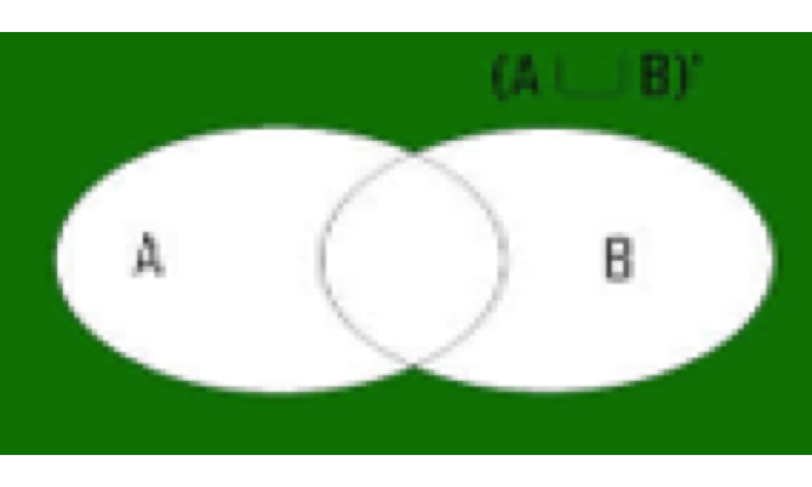
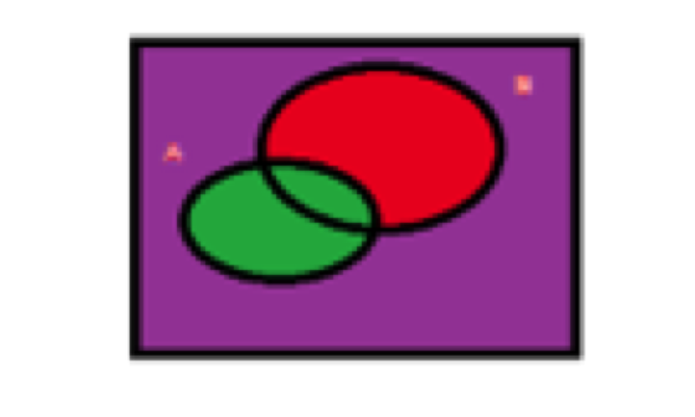
Notice that \(A\) and \(A^c\) are a partition of sample space S:
𝐴 and \(A^c\) are disjoint (mutually exclusive) : 𝐴∩ \(A^c=\phi\)
their union is the whole space: \(𝐴∪A^c=𝑆\)
The formula used the rule of total probability and \[𝑃(𝐴│𝐵)= 𝑃(𝐴\ and \ 𝐵)/𝑃(𝐵), 𝑃(𝐴\ 𝑎𝑛𝑑\ 𝐵)= 𝑃(𝐵│𝐴)𝑃(𝐴), 𝑃( A^c\ 𝑎𝑛𝑑\ 𝐵)= 𝑃(𝐵│ A^c)𝑃( A^c )\]
In a statistics class, 80% of students can construct box plots, of those who can construct box plots, 86% passed, while only 65% of those students who cannot construct box plots passed. What is the probability that a student can construct box plots if it is known that the student passed?
Solution.
Let A ={ students can construct box plots} and B ={ students passed}, then \[𝑃(𝐴)=0.80, 𝑃(𝐵│𝐴)=0.86, 𝑃(𝐵│𝐴^𝑐 )=0.65\]
To find 𝑃(𝐴|B), use Bayes’ Theorem \[ \begin{eqnarray*}𝑃(𝐴│𝐵)&=& \frac{𝑃(𝐵│𝐴)𝑃(𝐴)}{𝑃(𝐵│𝐴)𝑃(𝐴)+𝑃(𝐵│𝐴^𝑐 )𝑃(𝐴^𝑐)}\\ &=&\frac{(0.86×0.80)}{(0.86×0.80+0.65×0.20)}=\frac{0.688}{(0.688+0.13)} = \frac{0.688}{0.818}\approx 0.84 \end{eqnarray*} \]
Answer: Of those students who passed, 84% can draw box plots.
We can also draw contingency table to explain – next slide
Draw contingency table to explain A ={ students can construct box plots} B ={ students passed}, then 𝑃(𝐴)=0.80, 𝑃(𝐵│𝐴)=0.86, \((𝐵│𝐴^𝑐)\)=0.65 To find 𝑃(𝐴|B).
\(𝑃(\text{𝑐𝑎𝑛 𝑑𝑟𝑎𝑤 𝑏𝑜𝑥 𝑝𝑙𝑜𝑡𝑠 │𝑝𝑎𝑠𝑠𝑒𝑑)}=𝑃(𝐴│𝐵)= \frac{0.688}{0.818} \approx 0.84\)
Let A ={ students can construct box plots} and B ={ students passed}, then
\[P(𝐴)=0.80, 𝑃(𝐵│𝐴)=0.86, 𝑃(𝐵│𝐴^𝑐 )=0.65\]\[𝑃(\text{𝑐𝑎𝑛 𝑑𝑟𝑎𝑤 𝑏𝑜𝑥 𝑝𝑙𝑜𝑡𝑠 │𝑝𝑎𝑠𝑠𝑒𝑑)}=𝑃(𝐴│𝐵)= \frac{0.688}{0.818} \approx 0.84\]
For a variable with events \(𝐴_1, 𝐴_2, … , 𝐴_𝑘\). If they are mutually disjoint \((𝐴_𝑖∩𝐴_𝑗=\alpha\) for all \(𝑖≠𝑗)\), and their union forms the whole sample space \(S = (𝐴_1∪𝐴_2∪…∪𝐴_𝑘)\), then for an event B of another variable,
\[𝑷(𝑨_𝒊│𝑩)= \frac{𝑷(𝑩│𝑨_𝒊 )𝑷(𝑨_𝒊)}{𝑷(𝑩│𝑨_𝟏 )𝑷(𝑨_𝟏 )+𝑷(𝑩│𝑨_𝟐 )𝑷(𝑨_𝟐 )+…+𝑷(𝑩│𝑨_𝒌 )𝑷(𝑨_𝒌)}\]
Note : This is really \[𝑷(𝑨_𝒊│𝑩)= \frac{𝑷(𝑩 𝒂𝒏𝒅 𝑨_𝒊 )}{𝑷(𝑩)}\]
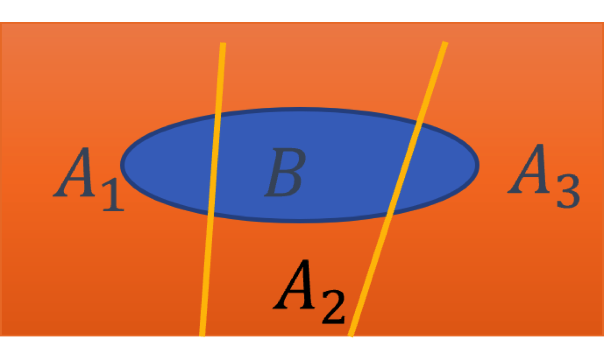
Joe visits campus every Thursday evening. However, some days the parking garage is full, often due to college events. There are academic events on 35% of evenings, sporting events on 20% of evenings, and no events on 45% of evenings. When there is an academic event, the garage fills up about 25% of the time, and it fills up 70% of evenings with sporting events. On evenings when there are no events, it only fills up about 5% of the time. If Jose comes to campus and finds the garage full, what is the probability that there is a sporting event?
The outcome of interest is there is a sporting event (call this 𝐴1), and the condition is that the lot is full (call this as 𝐵). Let 𝐴2 represent an academic event and 𝐴3 represent there being no event on campus. Then the given probabilities can be written as:
\[P(A_1) = 0.20 \hspace{1.5cm} P(A_2) = 0.35\hspace{1.5cm} P(A_3)= 0.45\] \[P(B|A_1) =0.70\hspace{1.5cm} P(B|A_2) =0.25\hspace{1.5cm} P(B|A_3) =0.05\]
\(P(A_1) = 0.2 \hspace{1.5cm}P(A_2) = 0.35\hspace{1.5cm}P(A_3)= 0.45\)
\(P(B|A_1) =0.7\hspace{1.5cm}P(B|A_2) =0.25\hspace{1.5cm}P(B|A_3) =0.05\)
Bayes’ Theorem can be used to compute the probability of a sporting event (\(𝐴_1\)) under the condition that the parking lot is full (𝐵):
\(𝑃(𝐴_1│𝐵)= \frac{𝑃(𝐵│𝐴_1 )𝑃(𝐴_1)}{𝑃(𝐵│𝐴_1 )𝑃(𝐴_1 )+𝑃(𝐵│𝐴_2 )𝑃(𝐴_2 )+𝑃(𝐵│𝐴_3 )𝑃(𝐴_3)}\)
\(=\frac{(0.7×0.2)}{(0.7×0.2+0.25×0.35+0.05×0.45)}=0.56\)
Based on the information that the garage is full, there is a 56% chance that a sporting event is being held on campus that evening.
List of topics
A random variable is a numerical measurement of the outcome of a random phenomenon. A random variable assumes numerical values associated with the random outcomes of an experiment.
We use a capital letter, like 𝑋, to denote a random variable.
The values of a random variable are denoted with a lowercase letter, in this case 𝑥.
There are two types of random variables:
Discrete random variables often take integer values (countable). Example. Flip a coin three times. X = number of heads in the 3 flips; X denotes a random variable. 𝑥=0, 1, 2, 3 are possible values of the random variable.
Continuous random variables take values in real numbers of an interval.
Example. time, age, and size measures such as height and weight.
We are often interested in the average outcome of a random variable.
We call this the expected value (mean), and it is a weighted average of the possible outcomes
For discrete random variables, say X, the expected value is defined/calculated by 𝜇=𝐸(𝑋)= \(\sum{x_ip(x_i)}\)
where the summation is taken over all possible values \(𝑥_𝑖\).
In a game of cards you win $1 if you draw a heart, $5 if you draw an ace (including the ace of hearts), $10 if you draw the king of spades and nothing for any other card you draw. Write the probability model for your winnings, and calculate your expected winning. Solution. Let X be the dollar amount of making (discrete r.v), then \(E(X)= \sum{x_ip(x_i)}=1(\frac{12}{52}) + 5(\frac{4}{52}) + 10(\frac{1}{52})+ 0(\frac{35}{52})=(\frac{42}{52}) \approx 0.81\)
Below is a visual representation of the probability distribution of winnings from this game:
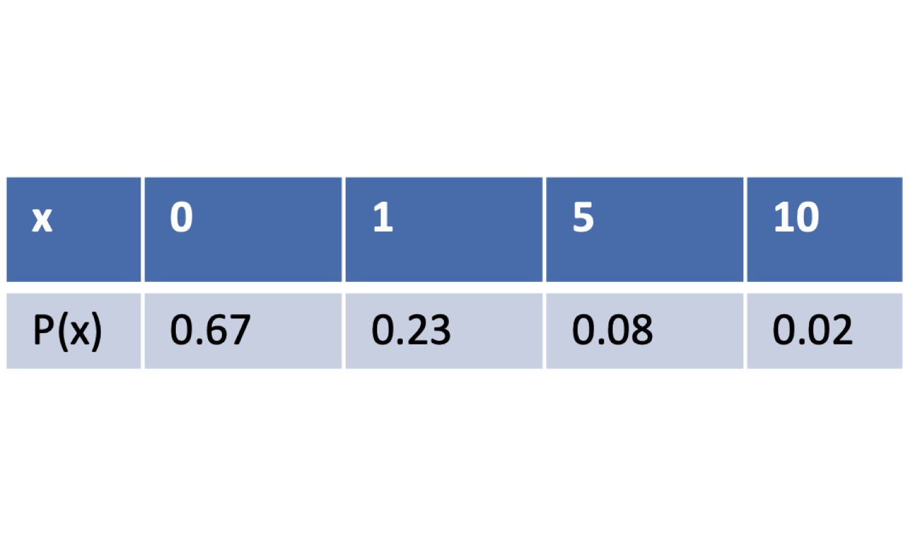
Compute the expected value:
\[E(X) = 0.23 +0.40 +0.2 = 0.83\]
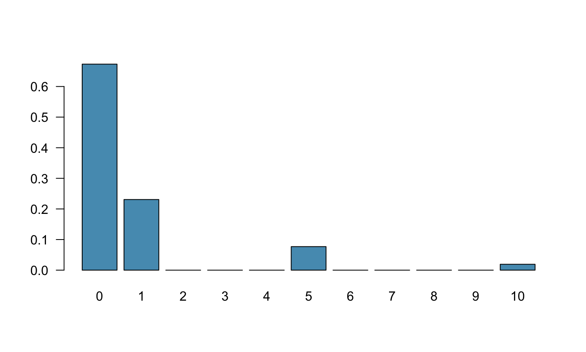
We are also often interested in the variability in the values of a random variable.
The variance
\[{\sigma^2 = Var(X) = \sum_{i=1}^{k}(x_i-𝜇)^2P(X=x_i)}\]
The Standard Deviation
\[{\sigma = SD(X) = \sqrt{Var(X)}}= \sqrt{\sum(x_i-𝜇)^2P(X=x_i)}\]
For the previous card game example, how much would you expect the winnings to vary from game to game?
\[ \begin{align} X && P(X) && X \cdot P(X) && (X - E(X))^2 && P(X) \cdot (X - E(X))^2\\ \hline 1 && \frac{12}{52} && 1 \times \frac{12}{52} = \frac{12}{52} && (1-0.81)^2 = 0.0361 && \frac{12}{52} \times 0.0361 = 0.0083 \\ \hline 5 && \frac{4}{52} && 5 \times \frac{4}{52} = \frac{20}{52} && (5-0.81)^2 = 17.5561 && \frac{4}{52} \times 17.5561 = 1.3505 \\ \hline 10 && \frac{1}{52} && 10 \times \frac{1}{52} = \frac{10}{52} && (10-0.81)^2 = 84.4561 && \frac{1}{52} \times 84.4561 = 1.6242 \\ \hline 0 && \frac{35}{52} && 0 \times \frac{35}{52} = 0 && (0-0.81)^2 = 0.6561 && \frac{35}{52} \times 0.6561 = 0.4416 \\ \hline && && E(X) = 0.81 \end{align} \]
For the previous card game example, how much would you expect the winnings to vary from game to game?
For the previous card game example, how much would you expect the winnings to vary from game to game?
\[ \begin{align} X && P(X) && X \cdot P(X) && (X - E(X))^2 && P(X) \cdot (X - E(X))^2\\ \hline 1 && \frac{12}{52} && 1 \times \frac{12}{52} = \frac{12}{52} && (1-0.81)^2 = 0.0361 && \frac{12}{52} \times 0.0361 = 0.0083 \\ \hline 5 && \frac{4}{52} && 5 \times \frac{4}{52} = \frac{20}{52} && (5-0.81)^2 = 17.5561 && \frac{4}{52} \times 17.5561 = 1.3505 \\ \hline 10 && \frac{1}{52} && 10 \times \frac{1}{52} = \frac{10}{52} && (10-0.81)^2 = 84.4561 && \frac{1}{52} \times 84.4561 = 1.6242 \\ \hline 0 && \frac{35}{52} && 0 \times \frac{35}{52} = 0 && (0-0.81)^2 = 0.6561 && \frac{35}{52} \times 0.6561 = 0.4416 \\ \hline && && E(X) = 0.81&& && {\\V(X)= 3.4246}&& {\\SD(X)=\sqrt{3.4246} = 1.85} \end{align} \]
For a given probability distribution, compute the mean and standard deviation.
Check answer:
𝜇=0.8
𝜎=0.6928203
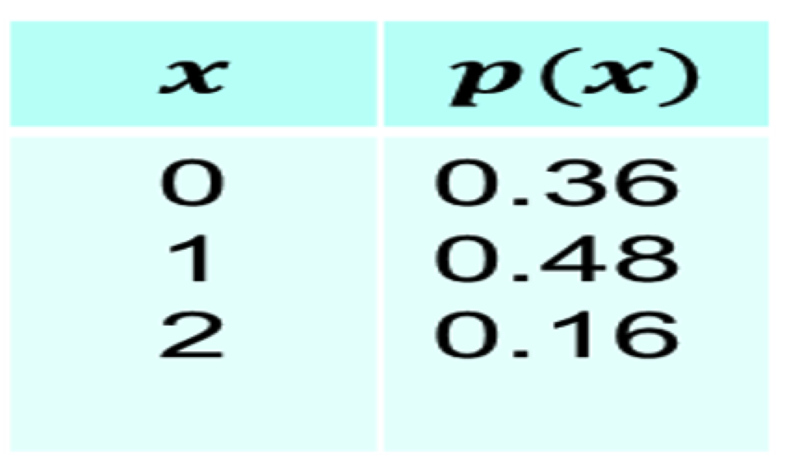